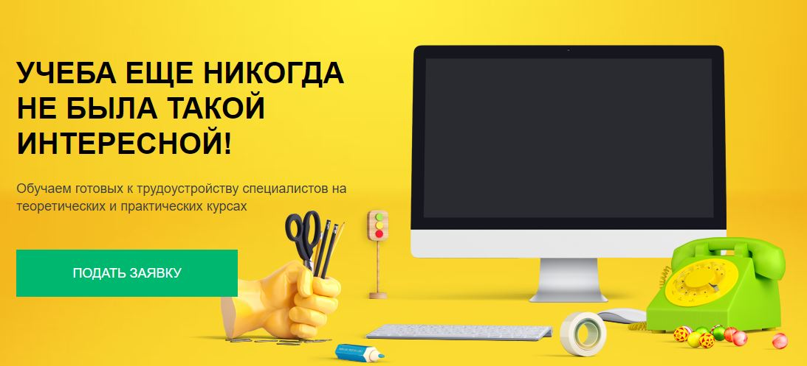
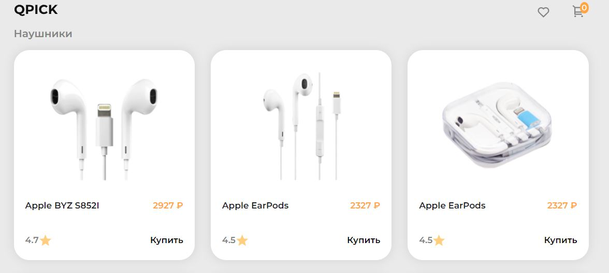
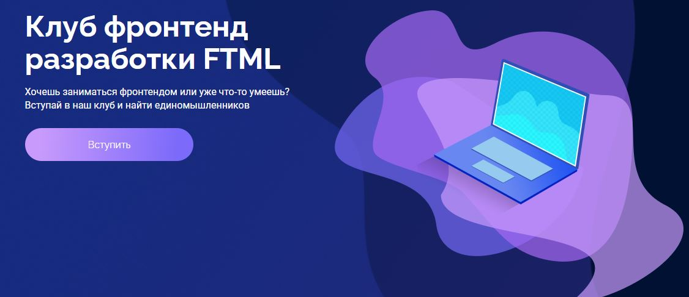
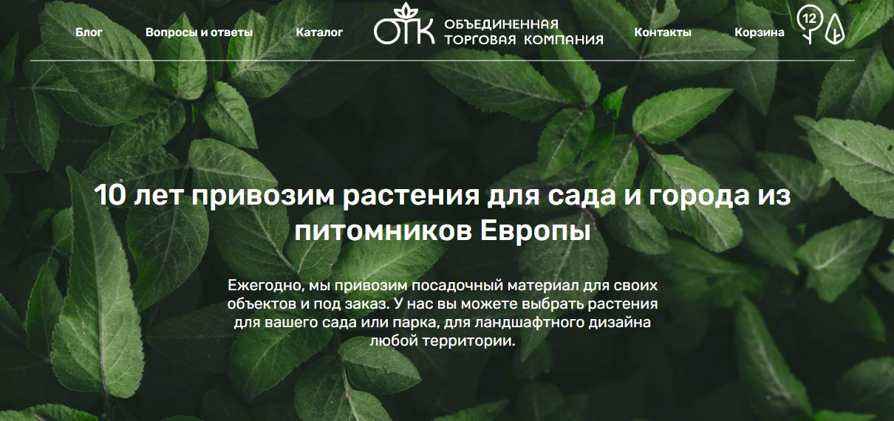
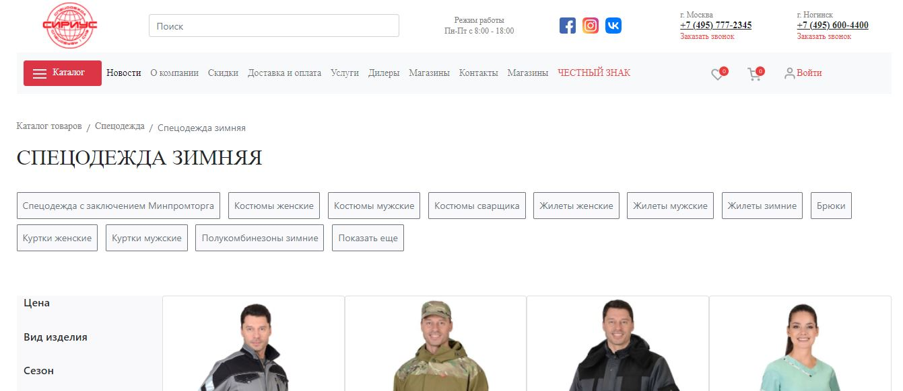
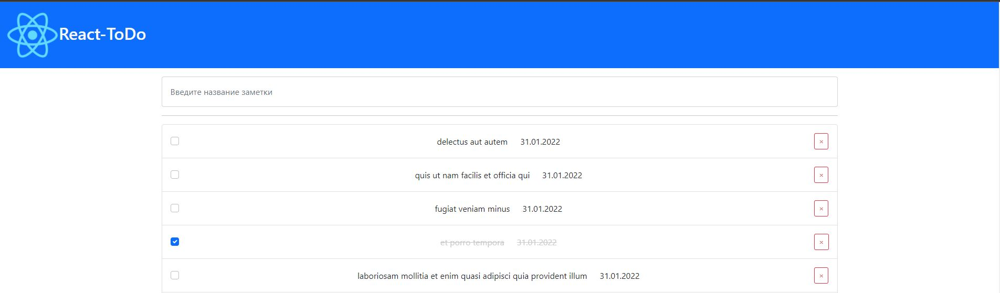
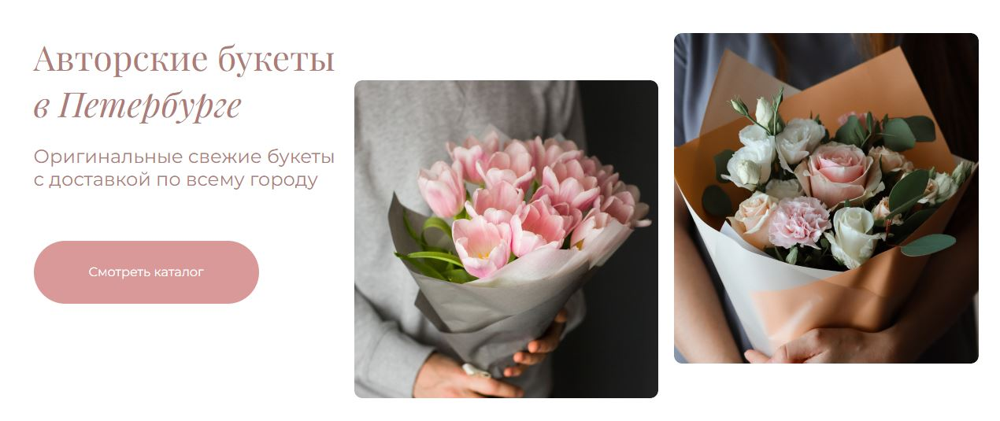

Портфолио моих работ
-

Project ITMO
Cтатический 2-х страничный макет выполненый в результате прохожнеия курса на opendu.ru от Университета ИТМО курс “ Веб-технологии”
-

Neoflex test
Тестовое задание для обучения в кампании Neoflex. Реализация добавления карточки в корзину и перенос на вторую страницу всех выбранных товаров(нажать на корзину для перехода)
-

Email test
Тестовое задание сверстать с помощью табличной верстки макет письма
-

FTML-club in ITMO
Cтатический однастраничный макет выполненый по заднию для клуба Frontend разработки в университетет ИТМО
-

OTK
Верстка макета во время прохождения практики в кампании от университета. Работа с HTML и CSS. В обязанности так же входило перенос готовой верстки в WordPress
-

Sirius
Типовая верстка онлайн-магазина, выполненная на HTML, SCSS, Bootstrap
-

Todo-React & Todo-Vue
В качестве задания для университета выполнил todo-list на базе фреймворков React и Todo-Vue
-

Botanika
Верстка в качестве марафона от HTMLAcademy